Szanowni Państwo,
Prezentuję do sprzedaży piękne czteropokojowe mieszkanie o powierzchni 87,77 m2 położone na słynnym osiedlu Wilno na warszawskim Targówku. Kompleks ten został wybudowany przez jednego z najskuteczniejszych polskich deweloperów Dom Development, słynącego z rzetelności i jakości wykończenia. Lokal jest znakomicie zlokalizowany w głębi osiedla przy ślepej, nieprzejezdnej ulicy Pohulanka. Jest tam naprawdę cicho i spokojnie i tak jak na całym osiedlu Wilno nie brakuje tutaj zieleni.
Nowoczesne, niskie budownictwo ze spokojnymi uliczkami tworzy bardzo kameralny charakter z dyskretnie rozplanowaną pełną infrastrukturą tak że po świeże pieczywo, warzywa czy paczkę z paczkomatu wystarczy po prostu zjechać windą. Czuje się tutaj, że niska intensywność zabudowy, z której słynie to osiedle nie jest tylko jakimś mitem.
To położone na ostatnim, trzecim piętrze mieszkanie lubi się od pierwszego wejścia. Jest tutaj przestrzeń, funkcjonalny układ i ładne, przytulne wykończenie.
Ponad 87 m2 zostało rozplanowanych w następujący sposób:
Mieszkanie posiada miejsce postojowe w garażu podziemnym (płatne dodatkowo 45 000 zł). Jest również dostępnych dla mieszkańców kilka zamykanych rowerowni.
Mieszkanie jest sprzedawane wraz z większością wyposażenia widocznego na zdjęciach. Standard wykończenia jest wysoki co nazwy marek do tego użytych mogą jedynie potwierdzić (płytki włoskiej firmy Atlas Concorde, zabudowa kuchenna znakomitej polskiej marki Wolsztyńskie Fabryki Mebli).
Komunikacja
Wygląda świetnie. Mamy przede wszystkim pieszy dostęp do PKP (do stacji Warszawa Zacisze-Wilno dojdziemy w 8 minut) skąd w zaledwie w 12 minut dojedziemy do stacji Warszawa Wileńska (pociągi kursują co 10-20 minut) a tam oczywiście mamy do dyspozycji Metro oraz linie autobusowe i tramwajowe we wszystkich kierunkach.
W bezpośrednim sąsiedztwie mamy do dyspozycji autobusy linii 156, 170, 262 oraz autobus nocny N16.
Otoczenie
Osiedle Wilno położone jest w prawdziwej enklawie na obszarze Elsnerowa – najspokojniejszej części Targówka. Teren z jednej strony zamknięty jest przebiegającą nieopodal linią kolejową (dzięki czemu mamy pieszy dostęp do PKP) a z drugiej Lasem na Utracie, dużymi, dzikimi terenami zachwycającymi spokojem i bliskością natury. Idealne miejsce na długie spacery, bieganie lub wypad na rower. Wśród wybudowanych tam niedawno oryginalnych, drewnianych alejek i wiat wypoczynkowych wijących się wśród drzew i zapierającej dech w piersiach ciszy nie spotkamy nigdy tłumów. Znajduje się tam również Zalew Bardowskiego, sztuczny zbiornik wodny z piękną plażą z piaskiem i miejscem do spróbowania sił w wakeboardingu.
Dodatkowe atuty mieszkania:
Zapraszam Państwa do obejrzenia mieszkania. Chętnie odpowiem również na wszelkie pytania. Jestem dostępny codziennie w godzinach 9-21.
Wojciech Walasek
Agencja Nieruchomości
 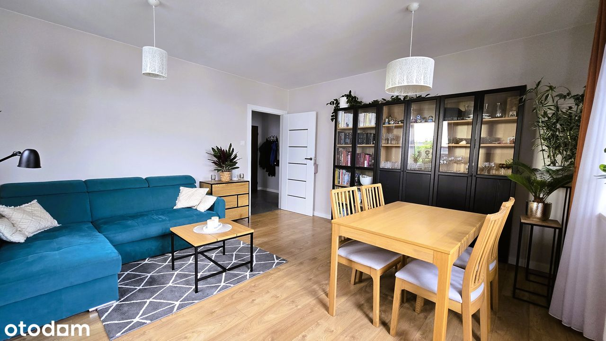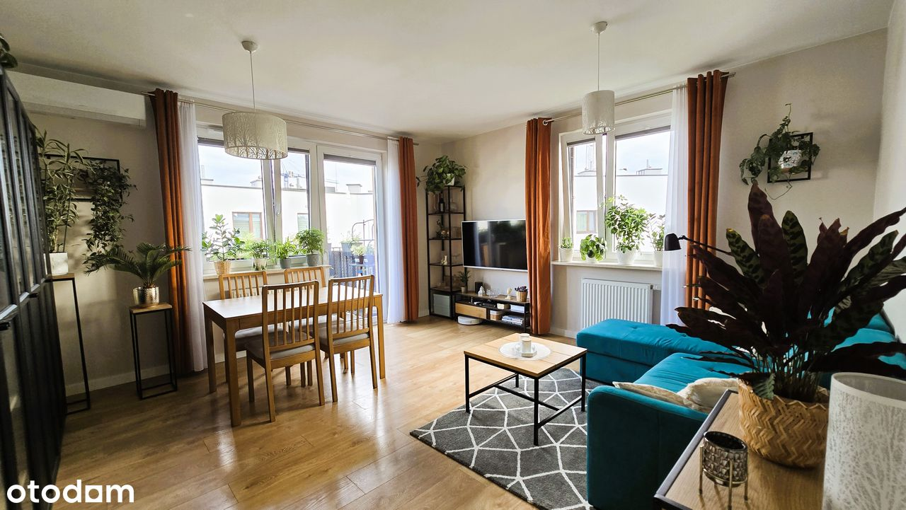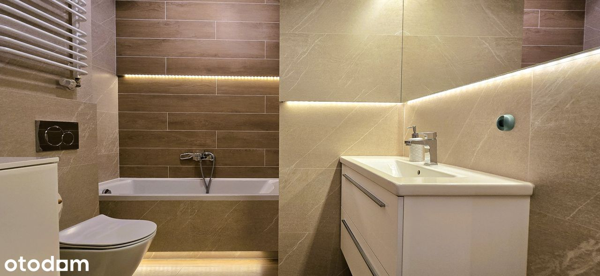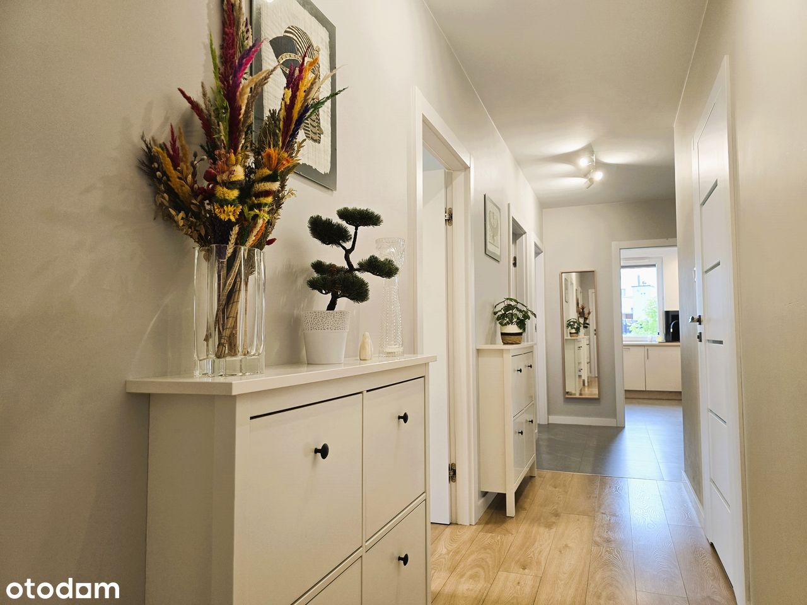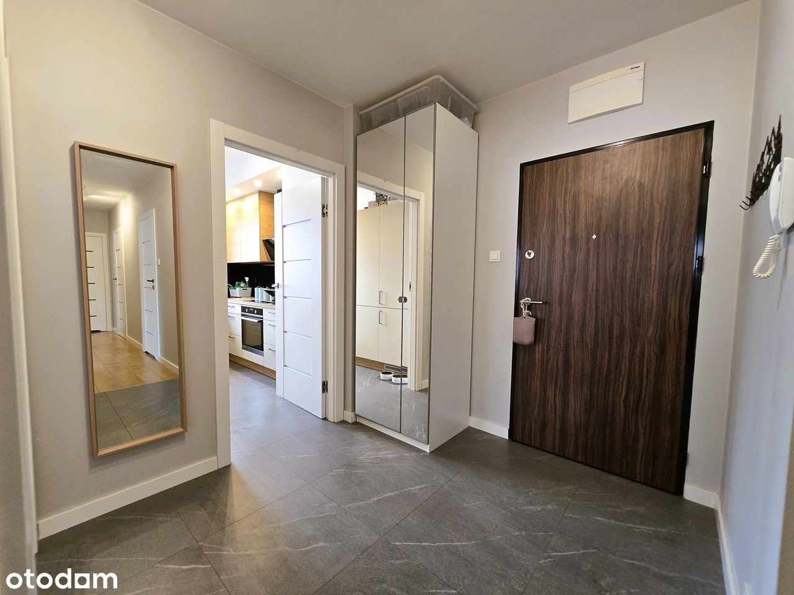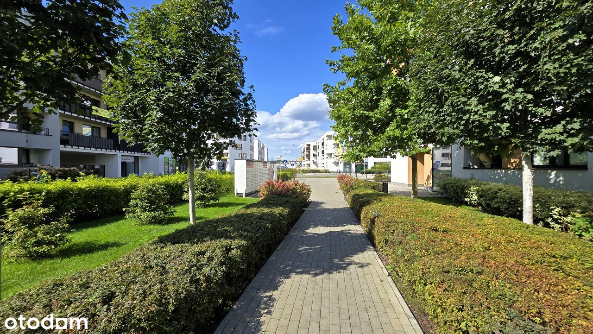
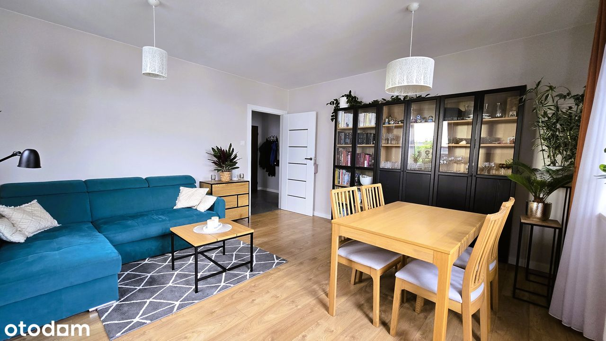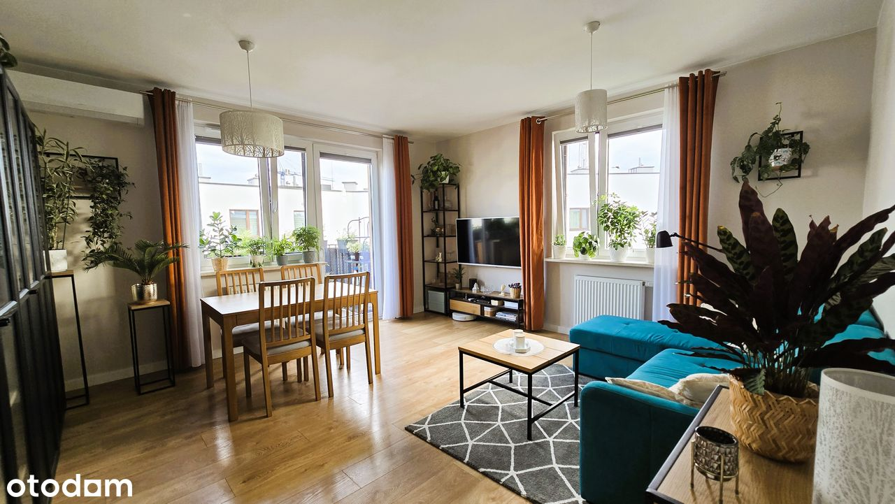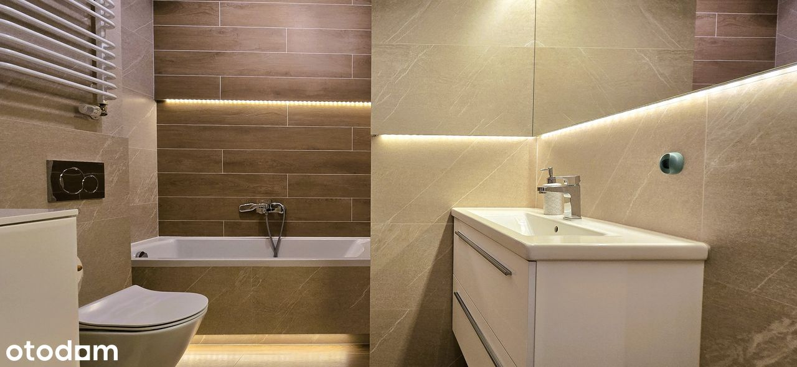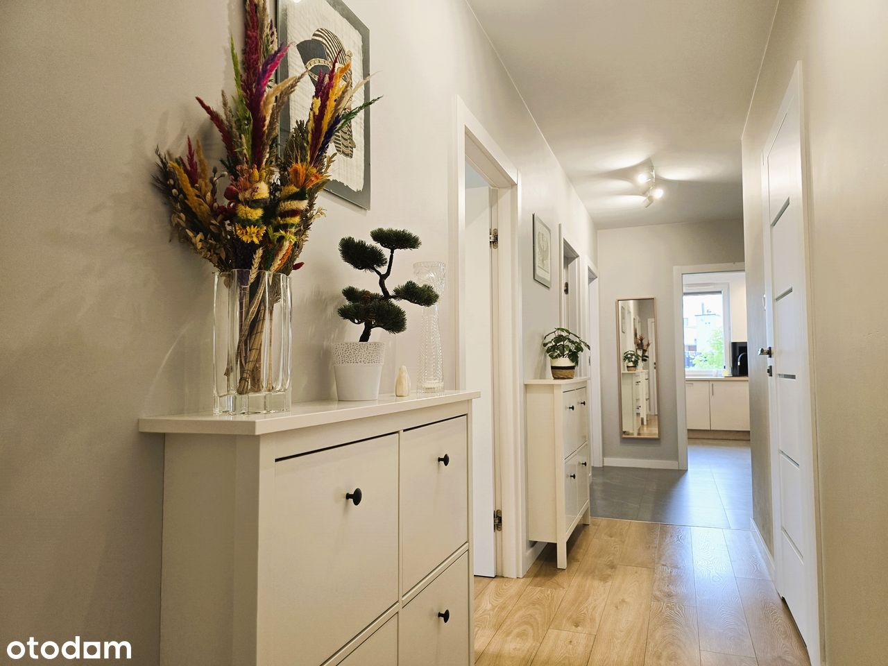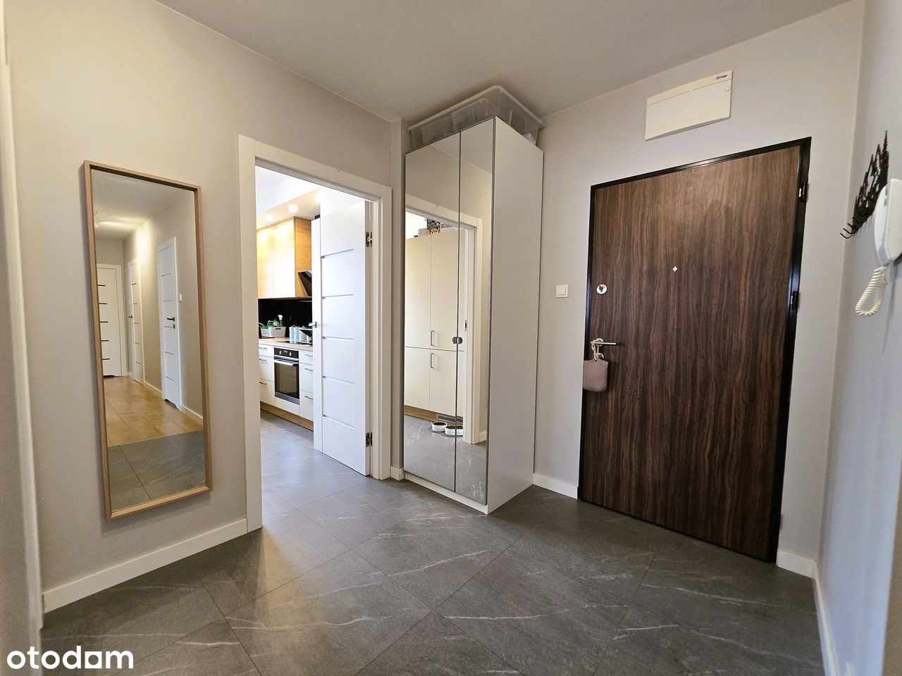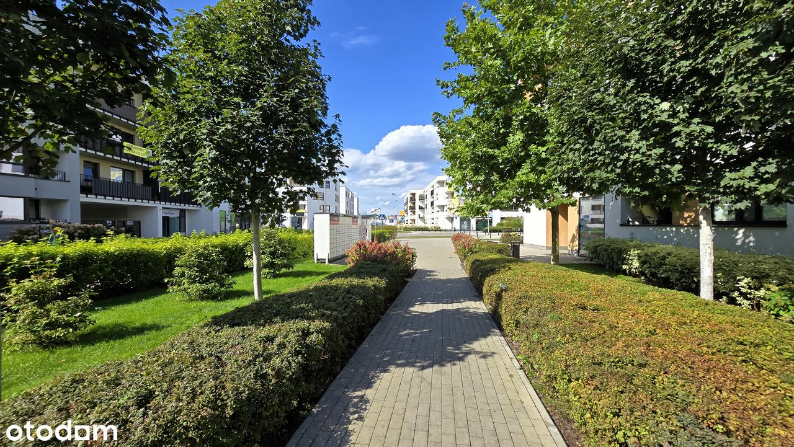